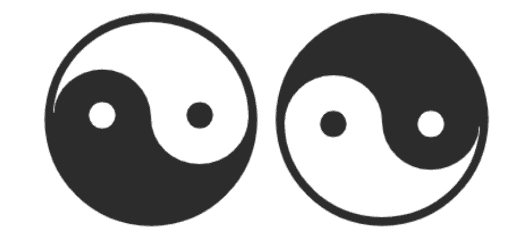
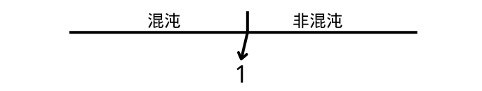

2024-11-18
2024-11-18  14:44
14:4401.道可道，非常道。名可名，非常名。无，名天地之始。有，名万物之母。故常无，欲以观其妙。常有，欲以观其徼。此两者同出而异名，同谓之玄。玄之又玄，众妙之门。↗翻译
注解：参考文章↗《列子》-天瑞。何谓同出而异名？某某、非某某同出。若无某某，则无非某某。反之亦然。一个名为某某，一个名为非某某，是为异名。 众妙之门。门内是众妙，门是有无。欲窥众妙，得先进门。
02.天下皆知美之为美，斯恶矣；皆知善之为善，斯不善已。故有无相生，难易相成，长短相形，高下相倾，音声相和，前后相随。是以圣人处无为之事，行不言之教。万物作焉而不辞。生而不有，为而不恃，功成而弗居。夫唯弗居，是以不去。
注解：自然，可以理解为趋势，方向。顺应自然而为之，是为无为。万物作焉而不辞，即是顺应自然。夫唯弗居，是为不去。对于“夫”这类人来说，不占有这个功，就没有失去这个功的可能。扩展：功在谁？若夫行无为之事，那么功当归于自然，即归于道。而道，不取功，不取非功。所以，此功不可得。
03.不尚贤， 使民不争。不贵难得之货，使民不为盗。不见可欲，使民心不乱。是以圣人之治，虚其心，实其腹，弱其志，强其骨；常使民无知、无欲，使夫智者不敢为也。为无为，则无不治。
注解：圣人怎么处事？处无为之事。在老子所处的春秋时期，战争是趋势。夫智者敢不敢为？敢为。是圣人之治？当时的权贵可以被定义为圣人吗？权贵争权、财、色。战争是趋势，而功不可得。故单从夫居功这一行为来看，不可以被定义为圣人。所以是非圣人之治。是无为之治吗？是，为什么？天地不仁，以万物为刍狗。老子所说的这种做法适用于较为理想化的社会。春秋时期战争是趋势。是民争、民盗、民心乱、夫智者敢为。是春秋时期的无为之治。 注：百度百科↗老子
04.道冲而用之，或不盈。渊兮似万物之宗。挫其锐，解其纷，和其光，同其尘，湛兮似或存。吾不知谁之子，象帝之先。
注解：百度百科↗冲。表示水的涌动。道，在老子中，道在不同语句所指示的东西是不同的。道冲 ，道似水流般涌动。这里的道指的是阴阳之道。左边的八卦图可以形象地解释。用之弗盈，谁用？老子用。弗盈，不满、用不完的意思。为何弗盈？于道，无得无失。似万物之宗，有无同出即是阴阳同出，万物是有。
，道似水流般涌动。这里的道指的是阴阳之道。左边的八卦图可以形象地解释。用之弗盈，谁用？老子用。弗盈，不满、用不完的意思。为何弗盈？于道，无得无失。似万物之宗，有无同出即是阴阳同出，万物是有。
05.天地不仁，以万物为刍狗。圣人不仁，以百姓为刍狗。天地之间，其犹橐龠乎？虚而不屈，动而愈出。多言数穷，不如守中。
注解：参考文章↗《黄帝阴符经》。橐龠，参考哔哩哔哩↗风箱。多言数穷对应动而愈出，守中对应虚而不屈。虚而不屈，风箱里原本是空虚和相对平静的。动而愈出，拉风箱就打破了原有的系统。言引申为政令，命令。穷，风箱系统的自平衡能力被破坏。
06.谷神不死是谓玄牝。玄牝之门是谓天地根。绵绵若存，用之不勤。
注解：谷神，道也。人法地，地法天，天法道，道法自然。天地法于道。天地系统也可称为道。道的含义在不同语句意思不同。
07.天长地久。天地所以能长且久者，以其不自生，故能长生。是以圣人后其身而身先，外其身而身存。非以其无私邪！故能成其私。
注解：道，无得无失。后其身而身先,谦让的行为态度。外其身而身存,参考文章↗《庄子》-齐物论。
08.上善若水。水善利万物而不争，处众人之所恶，故几于道。居善地，心善渊，与善仁，言善信，正善治，事善能，动善时。夫唯不争，故无尤。
注解：老子的不争思想
09.持而盈之不如其已；揣而锐之不可长保；金玉满堂莫之能守；富贵而骄，自遗其咎。功遂身退，天之道。
注解：无
10.载营魄抱一，能无离乎？专气致柔，能如婴儿乎？涤除玄览，能无疵乎？爱国治民，能无为乎？天门开阖，能为雌乎？明白四达，能无知乎。
注解：做事情的高层次境界。明白四达，能无知乎？这个知什么意思？有一些翻译是说通智，指心智、心机。我的理解知就是知道的知。至圣者，非圣，非非圣。至爱者，非爱，非非爱。至知者，非知，非非知。
11.三十辐共一毂，当其无，有车之用。埏埴以为器，当其无，有器之用。凿户牖以为室，当其无，有室之用。故有之以为利，无之以为用。
12.五色令人目盲，五音令人耳聋，五味令人口爽，驰骋畋猎令人心发狂，难得之货令人行妨。是以圣人，为腹不为目，故去彼取此。
注解：无
13.宠辱若惊，贵大患若身。何谓宠辱若惊？宠为下。得之若惊失之若惊是谓宠辱若惊。何谓贵大患若身？吾所以有大患者，为吾有身，及吾无身，吾有何患。故贵以身为天下，若可寄天下。爱以身为天下，若可托天下。

注解：何为惊？与原预期相差较大则惊。如何使用？先断预期，如果你能使用的手段不足以使其预期产生较大的波动，就先抬高或拉低其预期，抬或拉到什么程度需要视情况而定，大惊大拉，小惊小拉。
14.视之不见名曰夷。听之不闻名曰希。抟之不得名曰微。此三者不可致诘，故混而为一。其上不皦，其下不昧，绳绳不可名，复归于无物。是谓无状之状，无物之象，是谓惚恍。迎之不见其首，随之不见其后。执古之道以御今之有。能知古始，是谓道纪。
注解：看不到，听不到，摸不到的是有还是无？是有。有一些色彩，声音频段，分子等人类是看不到，听不到，摸不着的。后面也说了，复归于无物。此三者不可致诘，故混而为一。意思是深究不下去了，所以就把他们看成一个整体。老子是怎么认识这些看不到听不到摸不着的东西呢？通过道(这里的道是阴阳之道， 有某某，就有非某某)。有可视，就有非可视。有可听，就有非可听。有可抟，就有非可抟。
15.古之善为士者，微妙玄通，深不可识。夫唯不可识，故强为之容。豫兮若冬涉川；犹兮若畏四邻；俨兮其若容；涣兮若冰之将释；敦兮其若朴；旷兮其若谷；混兮其若浊；澹兮其若海；飉兮若无止。孰能浊以静之徐清。孰能安以动之徐生。保此道者不欲盈。夫唯不盈故能蔽而新成。
注解：无
16.致虚极，守静笃。万物并作，吾以观复。夫物芸芸各复归其根。归根曰静，是谓复命；复命曰常，知常曰明。不知常，妄作凶。知常容，容乃公，公乃全，全乃天，天乃道，道乃久，没身不殆。
注解：无
17.太上，下知有之。其次，亲而誉之。其次，畏之。其次，侮之。信不足焉，有不信焉。悠兮其贵言，功成事遂，百姓皆谓∶我自然。
注解：信不足焉，有不信焉。至信非信，非非信。
18.大道废有仁义；智慧出有大伪；六亲不和有孝慈；国家昏乱有忠臣。
注解：有某某，即有非某某。有仁义，既有非仁义。有大伪，既有非大伪。有孝慈，既有非孝慈。有忠臣，既有非忠臣。
19.绝圣弃智，民利百倍；绝仁弃义，民复孝慈；绝巧弃利，盗贼无有；此三者，以为文不足。故令有所属，见素抱朴少私寡欲。
注解：无
20.绝学无忧，唯之与阿，相去几何？善之与恶，相去若何？人之所畏，不可不畏。荒兮其未央哉！众人熙熙如享太牢、如春登台。我独泊兮其未兆，如婴儿之未孩；儡儡兮若无所归。众人皆有余，而我独若遗。我愚人之心也哉！沌沌兮。俗人昭昭，我独昏昏；俗人察察，我独闷闷。众人皆有以，而我独顽且鄙。我独异于人，而贵食母。
注解：唯之与阿，相去几何？善之与恶，相去若何？对于一个系统内对立事物，两者差异大不大要视事物而定。这个差异是形体的差异。男人与女人，只有一条染色体中的某些片段有差异。人类与非人类，染色体数不同，单元排列也不同。生物与非生物。宇宙与非宇宙。百度百科↗太牢。
21.孔德之容惟道是从。道之为物惟恍惟惚。惚兮恍兮其中有象。恍兮惚兮其中有物。窈兮冥兮其中有精。其精甚真。其中有信。自古及今，其名不去以阅众甫。吾何以知众甫之状哉！以此。
注解：无
22.曲则全，枉则直，洼则盈，敝则新少则得，多则惑。是以圣人抱一为天下式。不自见故明；不自是故彰；不自伐故有功；不自矜故长；夫唯不争，故天下莫能与之争。古之所谓∶曲则全者」岂虚言哉！诚全而归之。
注解：无
23.希言自然。故飘风不终朝，骤雨不终日。孰为此者？天地。天地尚不能久，而况于人乎？故从事于道者，同于道。德者同于德。失者同于失。同于道者道亦乐得之；同于德者德亦乐得之；同于失者失于乐得之信不足焉有不信焉。
注解：无
24.企者不立；跨者不行。自见者不明；自是者不彰。自伐者无功；自矜者不长。其在道也曰∶余食赘形。物或恶之，故有道者不处。
注解：无
25.有物混成先天地生。寂兮寥兮独立不改，周行而不殆，可以为天下母。吾不知其名，强字之曰道。强为之名曰大。大曰逝，逝曰远，远曰反。故道大、天大、地大、人亦大。域中有四大，而人居其一焉。人法地，地法天，天法道，道法自然。
注解：何为自然？自然亦是道。非混沌系统最大自然。有无同出之道(阴阳之道)，是一生二之道，是在非混沌系统原始、普适性的道。本章所说的道是什么道？亦是阴阳之道，适用范围大于天地之道。天地之道法于此道。此道(自然)法于自然，自然法于另一个自然。这就是当今宇宙系统。独立不改，此独立是相对独立，是相对于其他同等级系统的独立，法于自然。
26.重为轻根，静为躁君。是以君子终日行不离轻重。虽有荣观燕处超然。奈何万乘之主而以身轻天下。轻则失根，躁则失君。
注解：矛盾的双方总是某一方占据优势。两个分子间，在理想化的条件下(就单讨论两个分子)，引力和斥力是可以达到长久绝对平衡的。但是，宇宙间的事物是相互联系的，绝对平衡不能长久，相对平衡(就是有一方占据优势)才具普遍性，双方是在变动中的，你进我退，你增我减。
27.善行无辙迹。善言无瑕谪。善数不用筹策。善闭无关楗而不可开。善结无绳约而不可解。是以圣人常善救人，故无弃人。常善救物，故无弃物。是谓袭明。故善人者不善人之师。不善人者善人之资。不贵其师、不爱其资，虽智大迷，是谓要妙。
注解：无
28.知其雄，守其雌，为天下溪。为天下溪，常德不离，复归于婴儿。知其白，守其黑，为天下式。为天下式，常德不忒，复归于无极。知其荣，守其辱，为天下谷。为天下谷，常德乃足，复归于朴。朴散则为器，圣人用之则为官长。故大制不割。
注解：无
29.将欲取天下而为之，吾见其不得已。天下神器，不可为也，为者败之，执者失之。夫物或行或随、或觑或吹、或强或羸、或挫或隳。是以圣人去甚、去奢、去泰。
注解：这里的天下指的是人类社会。天下是全体国民所有，非部分人、党派组织之天下。其夫欲取天下而为之，看似有为，实则是无为。天下不可得，不可取，为者败之，执者失之。
30.以道佐人主者，不以兵强天下。其事好还。师之所处荆棘生焉。军之后必有凶年。善有果而已，不敢以取强。果而勿矜。果而勿伐。果而勿骄。果而不得已。果而勿强。物壮则老，是谓不道，不道早已。
注解：生，长，壮，老，病，死是事物发展的规律。谈判桌上能达到的，就不要使用战争手段。实在谈不拢，则要有目的地去打，可以扩大战果，但要适可而止。不能为了打战而打战。
31.夫佳兵者不祥之器，物或恶之，故有道者不处。君子居则贵左，用兵则贵右。兵者不祥之器，非君子之器，不得已而用之，恬淡为上。胜而不美，而美之者，是乐杀人。夫乐杀人者，则不可得志于天下矣。吉事尚左，凶事尚右。偏将军居左，上将军居右。言以丧礼处之。杀人之众，以悲哀泣之，战胜以丧礼处之。
注解：无
32.道常无名。朴虽小天下莫能臣也。侯王若能守之，万物将自宾。天地相合以降甘露，民莫之令而自均。始制有名，名亦既有，夫亦将知止，知止可以不殆。譬道之在天下，犹川谷之于江海。
注解：老子的自然无为思想。
33.知人者智，自知者明。胜人者有力，自胜者强。知足者富。强行者有志。不失其所者久。死而不亡者，寿。
注解：无
34.大道泛兮，其可左右。万物恃之以生而不辞，功成而不名有。衣养万物而不为主，常无欲可名于小。万物归焉，而不为主，可名为大。以其终不自为大，故能成其大。
注解：无
35.执大象天下往。往而不害安平太。乐与饵，过客止。道之出口淡乎其无味。视之不足见。听之不足闻。用之不足既。
注解：无
36.将欲歙之，必固张之。将欲弱之，必固强之。将欲废之，必固兴之。将欲取之，必固与之。是谓微明。柔弱胜刚强。鱼不可脱于渊，国之利器不可以示人。
注解：物壮则老
37.道常无为，而无不为。侯王若能守之，万物将自化。化而欲作，吾将镇之以无名之朴。无名之朴，夫亦将无欲。不欲以静，天下将自定。
注解：无
38.上德不德是以有德。下德不失德是以无德。上德无为而无以为。下德为之而有以为。上仁为之而无以为。上义为之而有以为。上礼为之而莫之以应，则攘臂而扔之。故失道而后德。失德而后仁。失仁而后义。失义而后礼。夫礼者忠信之薄而乱之首。前识者，道之华而愚之始。是以大丈夫，处其厚不居其薄。处其实，不居其华。故去彼取此。
注解：上德者，当不取德，不取非德，故能成其德。下德者，因其取德，故为无德。
39.昔之得一者。天得一以清。地得一以宁。神得一以灵。谷得一以盈。万物得一以生。侯王得一以为天下正。其致之。天无以清将恐裂。地无以宁将恐废。神无以灵将恐歇。谷无以盈将恐竭。万物无以生将恐灭。侯王无以贞将恐蹶。故贵以贱为本，高以下为基。是以侯王自称孤、寡、不谷。此非以贱为本邪？非乎。至誉无誉。不欲琭琭如玉，珞珞如石。
注解：无
40.反者道之动。弱者道之用。天下万物生于有，有生于无。

注解：反者道之动。以地球磁场为例，地球每隔一段时间就会发生磁极反转，伴随着的是原先世界发生巨大变动。弱者道之用。在八字命理里，取用神有一个原则是强者抑之，弱者扶之。在国际关系中，有第三世界。一阴一阳谓之道，当以强者抑之，弱者扶之，达到一个相对平衡。有生于无，这里有有无的概念，则指的是阴阳之道，有无相生，有生于无，无生于有。
41.上士闻道勤而行之。中士闻道若存若亡。下士闻道大笑之。不笑不足以为道。故建言有之。明道若昧。进道若退。夷道若纇。上德若谷。大白若辱。广德若不足。建德若偷。质真若渝。大方无隅。大器晚成。大音希声。大象无形。道隐无名。夫唯道善贷且成。
注解：无
42.道生一。一生二。二生三。三生万物。万物负阴而抱阳，冲气以为和。人之所恶，唯孤、寡不谷，而王公以为称，故物或损之而益，或益之而损。人之所教，我亦教之，强梁者，不得其死。吾将以为教父。

注解：这个1什么意思。举个例子，你站在两省交界处，那你处于哪个省？这个1是非混沌，非非混沌的状态。
43.天下之至柔，驰骋天下之至坚。无有入无间，吾是以知无为之有益。不言之教，无为之益天下希及之。
注解：无
44.名与身孰亲。身与货孰多。得与亡孰病。是故甚爱必大费。多藏必厚亡。知足不辱。知止不殆。可以长久。
注解：无
45.大成若缺，其用不弊。大盈若冲，其用不穷。大直若屈。大巧若拙。大辩若讷。静胜躁，寒胜热。清静为天下正。
注解：无
46.天下有道，却走马以粪。天下无道，戎马生于郊。祸莫大于不知足。咎莫大于欲得。故知足之足常足矣。
注解：无
47.不出户知天下。不窥牖见天道。其出弥远，其知弥少。是以圣人不行而知。不见而明。不为而成。
注解：无
48.为学日益。为道日损。损之又损，以至于无为。无为而无不为。取天下常以无事，及其有事，不足以取天下。
注解：无
49.圣人无常心。以百姓心为心。善者吾善之。不善者吾亦善之，德善。信者吾信之。不信者吾亦信之，德信。圣人在天下，歙歙焉，为天下浑其心。百姓皆注其耳目，圣人皆孩之。
注解：至善者，当不取善，不取非善。至信者，当不取信，不取非信。
50.出生入死。生之徒，十有三。死之徒，十有三。人之生，动之于死地，亦十有三。夫何故？以其生生之厚。盖闻善摄生者，陆行不遇兕虎，入军不被甲兵。兕无所投其角。虎无所用其爪。兵无所容其刃。夫何故？以其无死地。
注解：无
51.道生之，德畜之，物形之，势成之。是以万物莫不尊道，而贵德。道之尊，德之贵，夫莫之命而常自然。故道生之，德畜之。长之育之。亭之毒之。养之覆之。生而不有，为而不恃，长而不宰。是谓玄德。
注解：无
52.天下有始，以为天下母。既得其母，以知其子。既知其子，复守其母，没身不殆。塞其兑，闭其门，终身不勤。开其兑，济其事，终身不救。见其小曰明，守柔曰强。用其光，复归其明，无遗身殃。是为习常。
注解：无
53.使我介然有知，行于大道，唯施是畏。大道甚夷，而人好径。朝甚除，田甚芜，仓甚虚。服文彩，带利剑，厌饮食，财货有余。是谓盗夸。非道也哉。
注解：无
54.善建者不拔。善抱者不脱。子孙以祭祀不辍。修之于身其德乃真。修之于家其德乃余。修之于乡其德乃长。修之于邦其德乃丰。修之于天下其德乃普。故以身观身，以家观家，以乡观乡，以邦观邦，以天下观天下。吾何以知天下然哉？以此。
注解：无
55.含德之厚比于赤子。毒虫不螫，猛兽不据，攫鸟不抟。骨弱筋柔而握固。未知牝牡之合而全作，精之至也。终日号而不嗄，和之至也。知和曰常。知常曰明。益生曰祥。心使气曰强。物壮则老。谓之不道，不道早已。
注解：无
56.知者不言。言者不知。挫其锐，解其纷，和其光，同其尘，是谓玄同。故不可得而亲。不可得而疏。不可得而利。不可得而害。不可得而贵。不可得而贱。故为天下贵。
注解：道者，当不取亲，不取疏。不取利，不取害。不取贵，不取贱。
57.以正治国，以奇用兵，以无事取天下。吾何以知其然哉？以此。天下多忌讳而民弥贫。民多利器国家滋昏。人多伎巧奇物泫起。法令滋彰盗贼多有。故圣人云我无为而民自化。我好静而民自正。我无事而民自富。我无欲而民自朴。
注解：无
58.其政闷闷，其民淳淳。其政察察，其民缺缺。祸尚福之所倚。福尚祸之所伏。孰知其极，其无正。正复为奇，善复为妖。人之迷其日固久。是以圣人方而不割。廉而不刿。直而不肆。光而不耀。
注解：正复为奇，善复为妖。今天是正的，明天是奇的。那他是正还是奇？正者，即是非正，是名为正。
59.治人事天莫若啬。夫唯啬是谓早服。早服谓之重积德。重积德则无不克。无不克则莫知其极。莫知其极可以有国。有国之母可以长久。是谓深根固柢，长生久视之道。
注解：无
60.治大国若烹小鲜。以道莅天下，其鬼不神。非其鬼不神，其神不伤人。非其神不伤人，圣人亦不伤人。夫两不相伤，故德交归焉。
注解：老子是无神论还是有神论？皆不可取。善者吾善之。不善者吾亦善之，德善。信者吾信之。不信者吾亦信之，德信。
61.大国者下流，天下之交。天下之牝。牝常以静胜牡。以静为下。故大国以下小国，则取小国。小国以下大国，则取大国。故或下以取，或下而取。大国不过欲兼畜人。小国不过欲入事人。夫两者各得所欲，大者宜为下。
注解：无
62.道者万物之奥。善人之宝，不善人之所保。美言可以市尊。美行可以加人。人之不善，何弃之有。故立天子、置三公，虽有拱璧以先驷马，不如坐进此道。古之所以贵此道者何。不曰∶求以得，有罪以免邪？故为天下贵。
注解：无
63.为无为，事无事，味无味。大小多少，报怨以德。图难于其易，为大于其细。天下难事必作于易。天下大事必作于细。是以圣人终不为大，故能成其大。夫轻诺必寡信。多易必多难。是以圣人犹难之，故终无难矣。
注解：无
64.其安易持，其未兆易谋。其脆易泮，其微易散。为之于未有，治之于未乱。合抱之木生于毫末。九层之台起于累土。千里之行始于足下。为者败之，执者失之。是以圣人无为故无败，无执故无失。民之从事常于几成而败之。慎终如始则无败事。是以圣人欲不欲，不贵难得之货。学不学，复众人之所过，以辅万物之自然而不敢为。
注解：无
65.古之善为道者，非以明民，将以愚之。民之难治，以其智多。故以智治国，国之贼。不以智治国，国之福。知此两者，亦稽式。常知稽式，是谓玄德。玄德深矣、远矣！与物反矣。然后乃至大顺。
注解：无
66.江海之所以能为百谷王者，以其善下之，故能为百谷王。是以圣人欲上民，必以言下之。欲先民，必以身后之。是以圣人处上而民不重，处前而民不害。是以天下乐推而不厌。以其不争，故天下莫能与之争。
注解：无
67.天下皆谓我道大似不肖。夫唯大故似不肖。若肖，久矣！其细也夫。我有三宝持而保之∶一曰慈， 二曰俭，三曰不敢为天下先。慈故能勇，俭故能广，不敢为天下先故能成器长。今舍慈且勇，舍俭且广，舍后且先，死矣！夫慈以战则胜，以守则固。天将救之以慈卫之。
注解：无
68.善为士者不武。善战者不怒。善胜敌者不与。善用人者为之下。是谓不争之德。是谓用人之力。是谓配天之极。
注解：无
69.用兵有言，吾不敢为主而为客。不敢进寸而退尺。是谓行无行。攘无臂。扔无敌。执无兵。祸莫大于轻敌。轻敌几丧吾宝。故抗兵相加哀者胜矣。
注解：无
70.吾言甚易知、甚易行。天下莫能知、莫能行。言有宗、事有君。夫唯无知，是以我不知。知我者希，则我者贵。是以圣被褐怀玉。
注解：无
71.知不知上，不知知病。夫唯病病，是以不病。圣人不病，以其病病。夫唯病病，是以不病。
注解：无
72.民不畏威，则大威至。无狎其所居，无厌其所生。夫唯不厌，是以不厌。是以圣人自知不自见。自爱不自贵。故去彼取此。
注解：无
73.勇于敢则杀。勇于不敢则活。此两者或利或害。天之所恶孰知其故。天之道不争而善胜。不言而善应。不召而自来。繟然而善谋。天网恢恢疏而不失。
注解：无
74.民不畏死，奈何以死惧之。若使民常畏死，而为奇者，吾得执而杀之，孰敢。常有司杀者杀。夫代司杀者杀，是谓代大匠斫。夫代大匠斫者，希有不伤其手矣。
注解：无
75.民之饥以其上食税之多，是以饥。民之难治以其上之有为，是以难治。民之轻死以其求生之厚，是以轻死。夫唯无以生为者，是贤于贵生。
注解：无
76.人之生也柔弱，其死也坚强。草木之生也柔脆，其死也枯槁。故坚强者死之徒，柔弱者生之徒。是以兵强则灭，木强则折。强大处下，柔弱处上。
注解：无
77.天之道其犹张弓与。高者抑之，下者举之。有余者损之，不足者补之。天之道，损有余而补不足。人之道，则不然，损不足以奉有余。孰能有余以奉天下，唯有道者。是以圣人为而不恃，功成而不处。其不欲见贤邪！
注解：无
78.天下莫柔弱于水。而攻坚强者，莫之能胜。以其无以易之。弱之胜强。柔之胜刚。天下莫不知莫能行。是以圣人云，受国之垢是谓社稷主。受国不祥是为天下王。正言若反。
注解：正言若反。我认为是老子借此"受国之垢是谓社稷主。受国不祥是为天下王。"来反讽当时的统治者。
79.和大怨必有余怨，安可以为善。是以圣人执左契，而不责于人。有德司契，无德司彻。天道无亲常与善人。
注解：天道无亲常与善人。即是天道无亲，又为什么说常与善人？善人指谁？于道而言，当无善恶。
80.小国寡民。使有什伯之器而不用。使民重死而不远徙。虽有舟舆无所乘之。虽有甲兵无所陈之。使民复结绳而用之。甘其食、美其服、安其居、乐其俗。邻国相望，鸡犬之声相闻。民至老死不相往来。
注解：无
81.信言不美。美言不信。善者不辩。辩者不善。知者不博。博者不知。圣人不积。既以为人己愈有。既以与人己愈多。天之道利而不害。圣人之道为而不争。
注解：天之道利而不害。于道而言，当无利害。天地不仁，以万物为刍狗。为什么说利而不害？此处应理解为顺应天道而得利。79章的常与善人的善人，应指顺应道的人。常与，应是顺应道而得利，乃是自与，亦是道与。为何是道与？若无此道，可自与否？